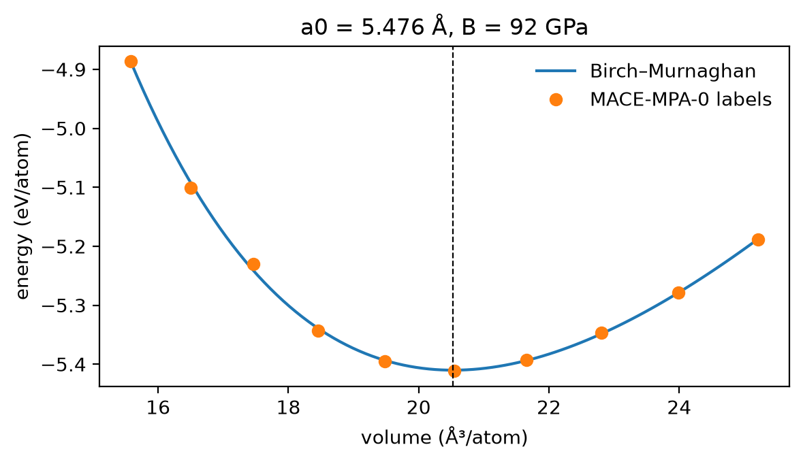
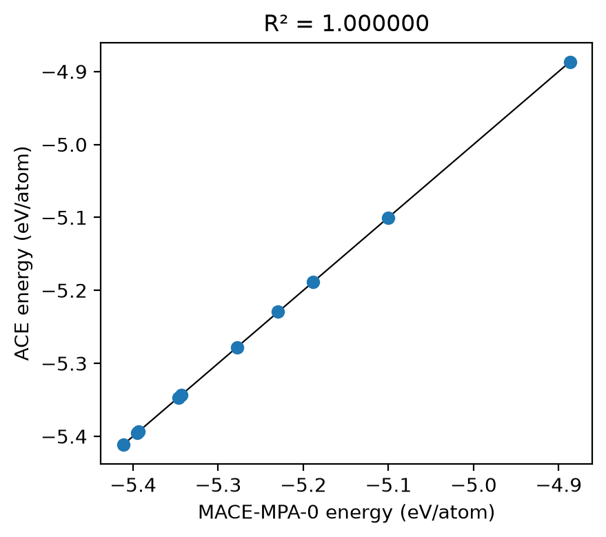

Tutorial 4: your data, your property¶
Build a deliberately narrow silicon dataset, fit an ACE model to it, and then ask the model about a property the dataset does not represent. The fit reproduces its training data almost perfectly; the property is still wrong.
Goals
- Build a strain-and-rattle bulk dataset and label it with a reference model.
- Read the equation of state off the labels.
- Fit ACE to the dataset and score the fit with \(R^2\) and a parity plot.
- Compute a vacancy formation energy with the labeller and with the fit, and see what the training RMSE did not tell you.
It builds on Tutorial 1, which explains the basis and the fit in more detail. It is adapted from notebook E1 of the MLIP School 2026.
Run this notebook. Install uv. Then run this command:
uvx marimo edit --sandbox https://raw.githubusercontent.com/ACEsuit/ace-jax/main/docs/user/tutorials/notebooks/school_dataset_si.py
The notebook opens in your browser. You do not need an account. You can also open the notebook in molab, the marimo hosted service. You must sign in to run it there.
This website shows a static copy of the notebook, run on a CPU when the site was built. The interactive controls show their default values. Run time: less than 1 minute (the fit takes approximately 30 s).
import pathlib
import time
import jax
jax.config.update("jax_enable_x64", True) # fitting needs float64
import marimo as mo
import matplotlib.pyplot as plt
import numpy as np
from ace_jax import ACECalculator
from ace_jax.tutorials import labels as L
from ace_jax.tutorials import structures as T
Step 1: the labeller¶
A fit needs reference energies, forces and virials. In a real project those come from DFT. Here a foundation model stands in for DFT: MACE-MPA-0, an MIT-licensed model trained on PBE(+U) data. Treat it as the "truth" this notebook fits.
Labelling takes time, so the labels for all slider settings of this
notebook are included with the tutorial. label() finds each structure
by its content and returns the stored labels. It runs MACE only for a
structure that it does not have. For this, you must install one more
package (see the exercises). The
counter after each labelling step counts the structures you have labelled,
the budget that a real DFT project spends.
LABELS_URL = ("https://raw.githubusercontent.com/ACEsuit/ace-jax/main/"
"docs/user/tutorials/data/school/e1/labels-mpa-0.xyz")
_local = (mo.notebook_dir() / "../data/school/e1/labels-mpa-0.xyz") if mo.notebook_dir() else None
cache = L.LabelCache.from_file(_local if _local is not None and _local.exists() else LABELS_URL)
work = pathlib.Path("ace_jax_tutorial_4")
work.mkdir(exist_ok=True)
Step 2: build the dataset¶
Ten cubic 8-atom diamond cells, centred on \(a = 5.43\) Å: the lattice
constant is scaled over \(1 \pm s\) for a strain range \(s\), and each cell is
rattled with random displacements of standard deviation \(\sigma\) (seeded,
so a setting always gives the same cells). The two sliders set \(s\) and
\(\sigma\). T.e1_cells builds them; written out, it is
for i, scale in enumerate(np.linspace(1 - s, 1 + s, 10)):
atoms = bulk("Si", "diamond", a=5.43 * scale, cubic=True)
atoms.rattle(stdev=sigma, seed=2026 + i)
atoms.info["config_type"] = "bulk"
strain = mo.ui.slider(steps=list(T.E1_STRAINS), value=0.08, label="strain range s", show_value=True)
rattle = mo.ui.slider(steps=list(T.E1_RATTLES), value=0.02, label="rattle σ (Å)", show_value=True)
mo.hstack([strain, rattle], justify="start")
Interactive controls in the notebook (this page shows their defaults): strain range s = 0.08, rattle σ (Å) = 0.02
bulk_structures = T.e1_cells(strain.value, rattle.value)
labelled_bulk = L.label(bulk_structures, model="mpa-0", cache=cache)
volumes = np.array([a.get_volume() / len(a) for a in labelled_bulk])
energies = np.array([a.info["energy"] / len(a) for a in labelled_bulk])
mo.md(f"Labelled **{len(labelled_bulk)}** cells, volumes {volumes.min():.2f} to "
f"{volumes.max():.2f} ų/atom. Labels used so far: **{L.labels_used()}**.")
Labelled 10 cells, volumes 15.58 to 25.21 ų/atom. Labels used so far: 10.
Checkpoint 1 passed: 10 periodic 8-atom cells, each with an energy, forces and a virial.
Step 3: the labeller's equation of state¶
Before fitting anything, look at the labels. A Birch–Murnaghan fit to the energy per atom against volume gives the labeller's lattice constant and bulk modulus. Its minimum is between the sampled points. Thus the result does not depend on the spacing of the samples, if the strain range stays near the minimum. The Birch–Murnaghan form describes only a narrow range of volumes. A wide range of volumes moves \(v_0\) away from the minimum.
from ase.eos import EquationOfState
from ase.units import GPa
_eos = EquationOfState(volumes, energies, eos="birchmurnaghan")
ref_v0, _, ref_B = _eos.fit(warn=False)
ref_a0 = float((8 * ref_v0) ** (1 / 3)) # 8 atoms per cubic cell
_fig, _ax = plt.subplots(figsize=(6, 3.5))
_v = np.linspace(volumes.min(), volumes.max(), 100)
_ax.plot(_v, _eos.func(_v, *_eos.eos_parameters), "-", label="Birch–Murnaghan")
_ax.plot(volumes, energies, "o", label="MACE-MPA-0 labels")
_ax.axvline(ref_v0, ls="--", c="k", lw=0.8)
_ax.set_xlabel("volume (ų/atom)"); _ax.set_ylabel("energy (eV/atom)")
_ax.set_title(f"a0 = {ref_a0:.3f} Å, B = {ref_B / GPa:.0f} GPa"); _ax.legend(frameon=False)
_fig.tight_layout()
_fig

Checkpoint 2 passed: a0 = 5.476 Å (bulk modulus 92 GPa), close to the PBE lattice constant of silicon, 5.47 Å. (Experiment gives 5.431 Å; PBE overestimates it.)
Step 4: fit¶
Fit a linear ACE model with correlation order 3, maximum total degree 8 and cutoff 5.5 Å, as in Tutorial 1. The fit selects the energy, force and virial noise levels and the coefficient prior by maximising the evidence.
load_fit_dataaccepts the labelledAtomsdirectly. The labels are under the keysenergy,forcesandvirial.- There is no test set, so the test set is the training set. This step only measures how well the fit agrees with its own data.
The command-line equivalent, with the labelled cells written to train.xyz, is
from ace_jax.basis.model import BasisSpec
from ace_jax.fit.pipeline import FitConfig, fit, load_fit_data, save_model
_t = time.time()
cfg = FitConfig(model=BasisSpec(order=3, max_degree=8, rcut=5.5, elements=("Si",)), arm="linear",
m_per_species=0, e0="lsq", opt="lbfgs", r0=None, rungs=("map",),
predict_stats="recompute", predict_train=True,
energy_key="energy", force_key="forces", virial_key="virial").validate()
_log = []
result = fit(cfg, load_fit_data(cfg, train=labelled_bulk, log=_log.append), log=_log.append)
model_file = save_model(result, work / "fit")
fit_seconds = time.time() - _t
_table = next(s for s in _log if isinstance(s, str) and s.startswith("RMSE, train"))
mo.md(f"Fitted in {fit_seconds:.0f} s → `{model_file}`. The fit's error table "
f"(here on the training cells):\n\n```\n{_table}\n```")
Fitted in 20 s → ace_jax_tutorial_4/fit/model.npz. The fit's error table (here on the training cells):
RMSE, train (map)
-----------------------------------------------------------------
config type configs atoms E (meV/atom) F (eV/Å) V (meV/atom)
-----------------------------------------------------------------
all 10 80 0.08 0.0059 3.12
Step 5: \(R^2\) and parity¶
How well does the model reproduce the data it was trained on? The coefficient of determination compares the error the model leaves with the spread it had to explain:
where \(y_i\) is the labeller's energy per atom of cell \(i\), \(\hat y_i\) the model's, and \(\bar y\) the mean of the \(y_i\). \(R^2 = 1\) is a perfect reproduction; \(R^2 = 0\) is no better than predicting the mean.
calc = ACECalculator(str(model_file), skin=0) # skin=0: unrelated structures
reference = energies
predicted = []
for _a in labelled_bulk:
_b = _a.copy(); _b.calc = calc
predicted.append(_b.get_potential_energy() / len(_b))
predicted = np.array(predicted)
r2 = 1 - np.sum((reference - predicted) ** 2) / np.sum((reference - reference.mean()) ** 2)
_fig, _ax = plt.subplots(figsize=(4.5, 4))
_lo, _hi = reference.min(), reference.max()
_ax.plot([_lo, _hi], [_lo, _hi], "k-", lw=0.8)
_ax.plot(reference, predicted, "o")
_ax.set_xlabel("MACE-MPA-0 energy (eV/atom)"); _ax.set_ylabel("ACE energy (eV/atom)")
_ax.set_title(f"R² = {r2:.6f}")
_fig.tight_layout()
_fig

Checkpoint 3 passed: R² = 1.000000. The model reproduces its training set closely.
Step 6: a vacancy¶
Now ask the model something the training set does not contain. Take a \(2\times2\times2\) supercell (64 atoms), remove one atom, and compute the energy cost of the missing atom:
The perfect supercell gives the energy of one bulk atom, \(E_\text{bulk}/N_\text{bulk}\). Subtract it one time for each of the 63 remaining atoms. The result is the energy cost of the missing atom. Both cells use the lattice constant of the labeller (5.467 Å). Thus the reference cell has no strain, and its labels are included with the tutorial. The structures are not relaxed.
# labelled apart from the fit, so exercise 3 can train on the vacancy cell without a cycle
supercell, vacancy = T.e1_vacancy_pair()
labelled_probe = L.label([supercell, vacancy], model="mpa-0", cache=cache)
def e_vac(e_bulk, n_bulk, e_defect, n_defect):
return e_defect - n_defect * e_bulk / n_bulk
ref_vacancy = e_vac(labelled_probe[0].info["energy"], 64, labelled_probe[1].info["energy"], 63)
_model_E = []
for _a in (supercell, vacancy):
_b = _a.copy(); _b.calc = calc
_model_E.append(_b.get_potential_energy())
ace_vacancy = e_vac(_model_E[0], 64, _model_E[1], 63)
vacancy_error = ace_vacancy - ref_vacancy
mo.md(f"| | E_vac (eV) |\n|---|---|\n| MACE-MPA-0 | {ref_vacancy:.3f} |\n"
f"| ACE (fitted to bulk) | {ace_vacancy:.3f} |\n| error | {vacancy_error:+.3f} |\n\n"
f"Labels used so far: **{L.labels_used()}**.")
| E_vac (eV) | |
|---|---|
| MACE-MPA-0 | 2.890 |
| ACE (fitted to bulk) | 3.625 |
| error | +0.735 |
Labels used so far: 12.
Checkpoint 4 passed: the labeller's vacancy costs 2.89 eV: a few eV, the right scale for breaking four bonds in silicon.
The bulk fit has R² = 1.000000, yet its vacancy formation energy is off by +0.74 eV.
The training RMSE measures interpolation; properties measure the dataset.
Step 7: reflection¶
Would this bulk-only dataset give a good silicon surface energy? Write a couple of sentences, linking the environments of surface atoms to what the training set contained, before you open the answer below. Tutorial 6 answers it with numbers.
A model answer
Probably not. The fit has only seen near-equilibrium, fully coordinated bulk environments, each atom with four neighbours at nearly the same distance. Surface atoms are under-coordinated, so their environments lie outside the training distribution, however good the bulk parity plot looks. The vacancy above is the same failure in miniature: its four neighbours each lose a bond.
Exercises¶
- Strain range. Move the strain slider from 0.02 to 0.12. How do a0, B and the vacancy error change? Which of them does a wider range help?
- Rattle. Set the rattle to 0, then to 0.08 Å. Unrattled cells have zero forces by symmetry: what does the fit learn from them, and what happens to the vacancy error?
- Add the defect. Append
labelled_probe[1](the vacancy cell) to the training set in Step 4 (train=labelled_bulk + [labelled_probe[1]]), and refit. What happens to the vacancy error now, and why is that not a fair test any more? - Off the grid. The sliders move only to the settings that have labels in the tutorial.
To label any other structure, install the labeller into the notebook's
environment and re-run. In a marimo sandbox, add
mace-torchto the packages panel; elsewhere,
(CPU torch, about 1 GB). Then any setting labels live: in Step 2, try
T.e1_cells(0.05, 0.03) in place of T.e1_cells(strain.value, rattle.value).
Hint for exercise 2
With no rattle every force is zero, so the forces carry no information about the curvature of the energy away from perfect bulk: only the ten energies and virials constrain the fit.
Hint for exercise 3
With the defect in the training set the model is asked about a structure it has seen, so the error falls sharply. A property test is only a test if the structure is held out.
Summary¶
ace_jax.tutorials.labels.label()labels structures with an MIT foundation model, from the labels in the tutorial where it has them.load_fit_data(cfg, train=[atoms, ...])fits labelledAtomsdirectly; no files are needed.- A near-perfect \(R^2\) on the training set says the model interpolates its data. It says nothing about structures unlike them: test the properties you care about.
Next: Tutorial 5 asks how large a basis the data can support.